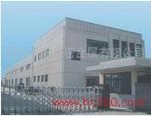
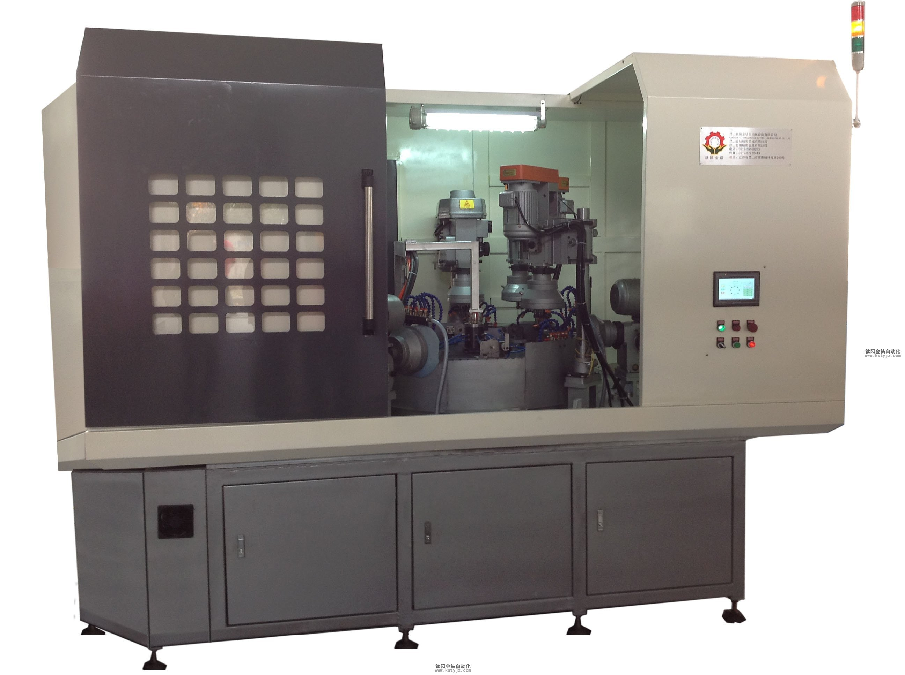

自動化對於鑽孔攻牙機的優點
文章出處：鈦陽金鑽責任編輯：kstyjz人氣：發表時間：2015-04-18 11:06

鑽孔 攻牙機的歷史
老式的鑽孔 攻牙機是採用手動手動壓制自動旋轉，手動控制開關開始、停止。需要操作人員精神高度集中，用人為的經驗和感覺把握攻牙深度和力度，這樣的傳統的加工方式工作效率低、成品質量差在高效率高品質的生產環境中無法生存。鑽孔攻牙機的變革
由於鑽孔攻牙工序在機械加工中是非常重要的工序，人們開始使用數控系統、PLC電器、電腦來控制鑽孔攻牙機的工作速度和工作精度，包括工作扭力來增加鑽孔攻牙機的工作效率保證加工質量。最初在鑽孔攻牙機上採用的只是簡單的繼電器及定位開關去調控攻牙機的啟動與關閉包括攻牙深度，後來更先進的技術被應用在了鑽孔攻牙設備上面，比如激光定位系統、電腦扭力調控個系統、擦速片離合系統等。
鈦陽金鑽自動鑽孔攻牙機
鈦陽金鑽自動化設備有限公司根據市場的需求自主開發研製了多款全自動鑽孔攻牙機，鈦陽金鑽自動化還承接客戶訂製全自動鑽孔攻牙設備。鈦陽金鑽自動化有自己的機械結構開發團隊、PLC電器開發團隊，多年從事自動化鑽孔攻牙設備的研製與開發工作，擁有多項自主研發的專利，為廣大客戶提供特殊制件的專用機解決方案。
上一篇：JT1-204臥式自動攻牙機介紹 | 下一篇：蘇州昆山攻牙機生產廠家標準攻牙機攻牙機配件
相關資訊
- 自動化對於鑽孔攻牙機的優點'>自動化對於鑽孔攻牙機的優點
- 國內機器人產業與技術遠遠落後於發達國'>國內機器人產業與技術遠遠落後於發達國
- 自動化機械的前景與未來自動攻牙機的發'>自動化機械的前景與未來自動攻牙機的發
- 自動攻牙機的工作原理如何選擇自動攻牙'>自動攻牙機的工作原理如何選擇自動攻牙
- 非標伺服自動攻牙機生產加工廠家'>非標伺服自動攻牙機生產加工廠家
- 攻牙機能夠使用的方法是什麼呢？'>攻牙機能夠使用的方法是什麼呢？
- 自動攻牙機沖床和沖孔機的對比'>自動攻牙機沖床和沖孔機的對比
- 解析自動攻牙機機床的發展方向'>解析自動攻牙機機床的發展方向
- 攻牙機和台鑽有什麼區別？'>攻牙機和台鑽有什麼區別？
- 全自動攻牙機如何分析螺紋加工的質量問'>全自動攻牙機如何分析螺紋加工的質量問


推薦文章
- 昆山鑽孔攻牙加工中心
- 昆山鑽孔攻牙機鑽孔機
- 昆山自動攻牙機攻牙機
- 攻牙機是電動的好還是
- 非標訂製擴孔專用機
- 國內機器人產業與技術
- 自動攻牙機的工作原理
- 非標伺服自動攻牙機生
- 立式固定雙軸鑽孔攻牙
- 無錫鈦陽金鑽自動攻牙